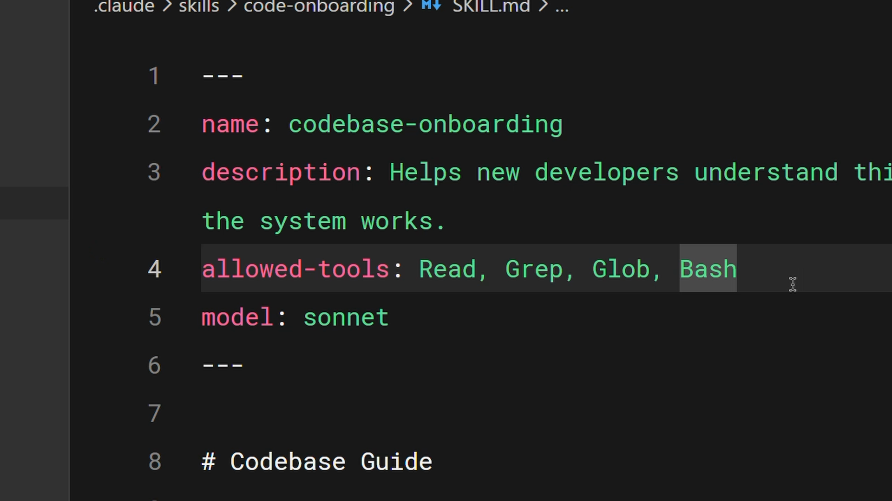
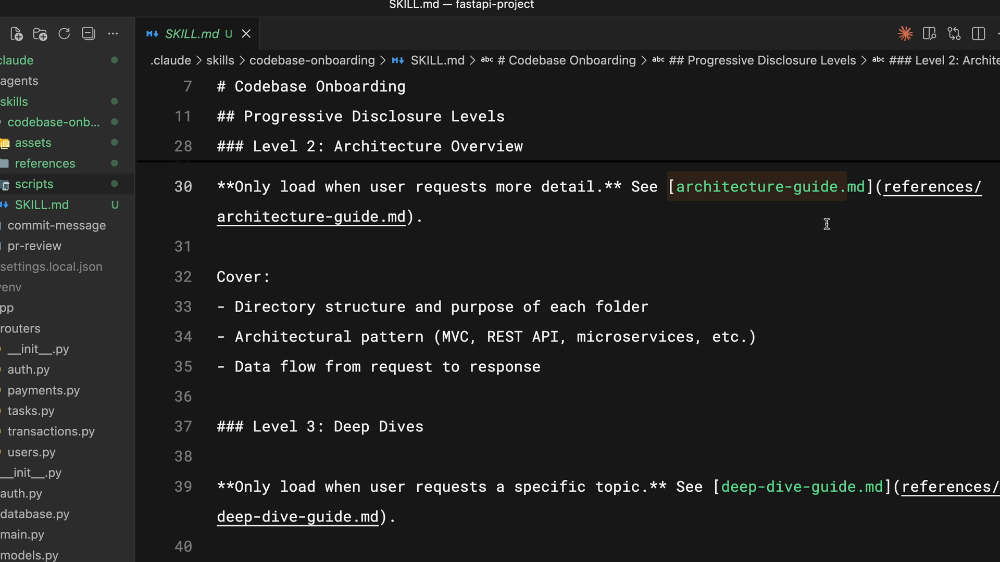

Настройка и несколько файлов
Чему научитесь
Около 20 минут
К концу урока вы сможете:
- заполнить поля frontmatter, включая
allowed-toolsиmodel; - написать описание, по которому skill срабатывает на нужные запросы;
- заранее разрешить инструменты, которые skill использует каждый раз;
- разложить большой skill по файлам, не забивая контекст.
Поля, описание, файлы
Видео, около 4 минут
Ролик проходит метаданные, хорошие описания, доступ к инструментам и раскладку большого skill по файлам. Ниже то же самое, с уточнением по allowed-tools: в тексте курса на Skilljar это поле описано как запрет остальных инструментов. В текущей документации Claude Code смысл другой.
Коротко
nameиdescriptionобязательны.allowed-toolsиmodelнеобязательны, но сильно меняют поведение.- Хорошее описание отвечает: что skill делает и когда его звать.
allowed-toolsзаранее разрешает перечисленные инструменты на ход, в котором skill вызван. Остальные инструменты при этом не исчезают.- Держите
SKILL.mdкороче примерно 500 строк. Подробности уносите в соседние файлы, которые Claude читает только по необходимости. - Скрипт выполняется снаружи контекста. В контекст попадает вывод, а не исходный код скрипта, если вы просите его запустить, а не прочитать.
Поля метаданных
Открытый стандарт Agent Skills задаёт основу frontmatter. Claude Code добавляет свои поля. Минимум такой:
name— имя. Строчные буквы, цифры и дефисы, до 64 символов. Для личного и проектного skill держите его таким же, как имя каталога.description— когда использовать skill. До 1024 символов. Это главное поле для автоматического выбора.allowed-tools— какие инструменты можно вызывать без вопроса о разрешении, пока длится ход, вызвавший skill.model— какую модель использовать для этого skill, напримерsonnet.

allowed-tools перечисляет Read, Grep, Glob и Bash, ниже указана модель sonnet.--- name: codebase-onboarding description: Helps a new developer map the codebase. Use when someone asks how the system works, where a feature lives, or how to start reading the repo. allowed-tools: Read, Grep, Glob, Bash model: sonnet ---
Как писать описание
«Помогай с документацией» не говорит, что делать. Claude оказывается в том же положении. Описание должно ответить на два вопроса: что skill делает и в какой момент его брать.
Если skill молчит на ваши обычные фразы, добавьте в описание те слова, которыми вы реально просите. Совпадение смысловое, но модели нужно за что зацепиться. Сравните:
description: Helps with docs.
description: Rewrites README sections for this repo. Use when the user asks to update the README, document a command, or explain install steps.
Второе сработает на «допиши в README, как ставить проект». Первое легко промахнётся или, наоборот, включится на любую мелочь про текст.
Не тащить всё в один файл
Когда skill активируется, содержимое SKILL.md входит в контекст и остаётся в разговоре. Файл на две тысячи строк съедает место и плохо поддерживается.
Progressive disclosure — «раскрытие по мере надобности». В SKILL.md остаётся суть и оглавление. Подробности лежат рядом, и Claude открывает файл только если инструкция это велит.
Обычная раскладка каталога:
scripts/— исполняемый код;references/— длинные справки;assets/— шаблоны, картинки, данные.
my-skill/ SKILL.md scripts/validate.sh references/architecture-guide.md assets/pr-template.md

SKILL.md ссылки открываются только по запросу. Рядом в каталоге skill лежат scripts, assets и references.В SKILL.md пишут условие, а не весь справочник:
If the user asks about system design, read references/architecture-guide.md. If they only ask where to add a component, do not open that file. To check the environment, run scripts/validate.sh. Do not read the script into context.
Ориентир: SKILL.md короче 500 строк. Всё, что не нужно в каждом запуске, уезжает в references/.
Вопросы к себе
- Какой ваш будущий skill разъедется на
SKILL.mdи справки? Что обязано быть в главном файле, а что можно открыть потом? - Где вам нужно меньше вопросов о разрешениях (
allowed-tools), а где нужен настоящий запрет писать файлы (disallowed-tools)?
Дальше
Следующий урок сравнивает skills с CLAUDE.md, субагентами, hooks и MCP, чтобы не запихивать в skill то, чему есть более точный механизм.
Оригинал урока: Configuration and multi-file skills. Поле allowed-tools сверено с документацией skills.